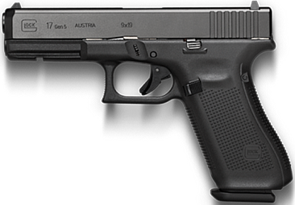
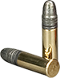
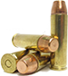
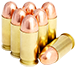

Meet the best interesting gun in the World.
 GLOCK 17
GLOCK 17

GLOCK 17
So easy to use, even your dog could do it.
Don't freak out, Don't Shiver, Just target and shoot.
Find the love of your gun or your money back.
 Glock 18
Glock 18
Here are some bullets types.
Rimfire is a method of ignition for metallic firearm cartridges as well as the cartridges themselves. It is called rimfire because the firing pin of a gun strikes and crushes the base's rim to ignite the primer. The rim of the rimfire cartridge is essentially an extended and widened percussion cap which contains the priming compound, while the cartridge case contains the propellant powder and the projectile (bullet).
Boxer primer is the most popular primer style in the United States, due to its ease of reloading – also making it the primary choice among military and civilian ammo manufactuers. Created by Edward Boxer, this popular ammo was patented in England in 1866 and in the U.S. in 1869.
Berdan cases are reusable, although the process is rather involved. The used primer must be removed, usually by hydraulic pressure or a pincer or lever that pulls the primer out of the bottom. A new primer is carefully seated against the anvil, and then powder and a bullet are added.
